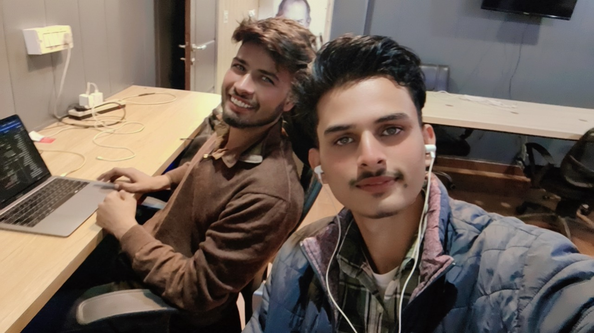

The Man Who Sweats The Details
Where others see a finished page, Hiten Rana sees a hundred decisions that had to go right.
Hiten Rana builds the part of the product people actually touch, and he builds it so quietly well that most never think about it at all. That, he maintains, is the entire point. An interface has done its job when it disappears.
His attention runs to the details others skip: how a page settles into place rather than snapping, how a button answers a thumb, how a layout keeps its composure when the screen shrinks to the size of a palm. Every transition is deliberate. Every spacing decision has been argued for at least once.
Colleagues report that nothing leaves his desk until it feels right under the hand, a standard that is difficult to measure and impossible to fake. The work is patient, unglamorous, and visible to everyone the moment it is missing.
React · JavaScript · Tailwind CSS · Interface Engineering · Responsive Layout · Motion & Animation

They share a table, a deadline, and a stubborn disagreement about what counts as finished. One will not release a screen that feels a frame too slow; the other will not release a system he cannot explain end to end. The argument has improved the work more than either would admit in print.
A Builder Who Keeps The Seams Hidden
Navjot Suman follows a problem wherever it goes, from the browser down to the schema beneath it.
Navjot Suman works across the whole of the stack, and his chief talent is that you cannot tell where one part ends and the next begins. He moves from a component in the browser to the interface serving it and the data model underneath without ever losing the thread of the problem.
He thinks in systems rather than in pieces. A change to a table is never only a change to a table; it is a question about everything that reads from it, and he would rather answer that question now than be asked it later by a user.
He is at his most useful on the difficult part of the work, the one quietly deciding whether the rest of it holds together. It is the sort of contribution that rarely shows up in a screenshot and is felt immediately when absent.
Node.js · React · Databases · API Design · System Architecture · Deployment